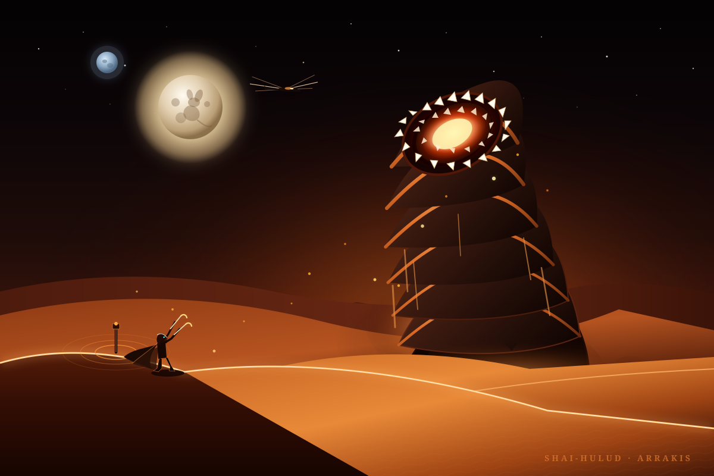

The Furnace Maw of Shai-Hulud
Deep within the maw of the sandworm burns an incandescent chemical fire. The friction of the worm's internal grinding gizzard and metabolic synthesis generates blinding amber heat and the precious substance melange.
Deep Desert Visions · Sector 4B Southern Erg
An artistic tribute to Frank Herbert's desert epic. Witness Shai-Hulud erupting from the shifting sands beneath the twin moons, summoned by the rhythmic pulse of a Fremen thumper.

Every detail woven into the scene draws directly from the ecology and folklore of Dune.
Deep within the maw of the sandworm burns an incandescent chemical fire. The friction of the worm's internal grinding gizzard and metabolic synthesis generates blinding amber heat and the precious substance melange.
Arrakis is crowned by two moons in its night sky. Upon the major moon rests the shadow of a kangaroo mouse, the creature of the desert whose adaptability and cunning inspired Paul Atreides' Fremen name.
To mount the worm, a Fremen uses a thumper to summon it, waits upon a dune's knife-edge crest, and embeds dual maker hooks between its armor rings. The exposed soft flesh forces the worm to stay above the sand.
Notice the glowing blue-within-blue gaze of the silhouetted warrior. Decades of consuming spice-infused bread, water, and air permanently stains the entire eyeball — the indelible mark of true Fremen blood.
"Bless the Maker and His water. Bless the coming and going of Him. May His passage cleanse the world. May He keep the world for His people."
— Ancient Fremen Benediction